コードを書き始める前に、まずはチェスのルールを押さえておきましょう。エンジンを作るということは、ルールをプログラムに「全部」教えるということです。人間なら「なんとなく」でわかっていることも、プログラムにはひとつ残らず書かなければいけません。
champierre さんは、チェスはどのくらい指しますか？
２年くらい、chess.com のレーティングは 900 - 1000 の間をいったりきたり。ルールはひととおり把握しています。
ちょうどいいです。「指せる」ことと「プログラムに説明できる」ことの間には、意外と大きな差があります。この章では、知っているはずのルールを、エンジンを作る側の目でもう一度見直していきましょう。まだルールを知らない読者のみなさんは、ここで一緒に覚えてしまってください。
チェスでは、強さをレーティングという数字で表します。勝てば上がり、負ければ下がります。強い相手に勝つと大きく上がる仕組みです。オンライン対局サイトの chess.com では、始めたばかりの人はだいたい数百点台で、1000 点前後あればルールも定跡の初歩もわかっている初級者です。ちなみに、人間の世界チャンピオンは 2800 点くらい。Stockfish はそれよりはるかに上で、3500 点を超えると言われています。
チェスは 8×8 = 64 マスの盤で、白と黒の 2 人が交互に駒を動かすゲームです。白が先手です。最初の配置は図 1.1 のようになります。
駒は 6 種類あります。
| 駒 | 英語 | 記号 | 1 人あたりの数 |
|---|---|---|---|
| キング | King | K | 1 |
| クイーン | Queen | Q | 1 |
| ルーク | Rook | R | 2 |
| ビショップ | Bishop | B | 2 |
| ナイト | Knight | N | 2 |
| ポーン | Pawn | P | 8 |
記号はこのあと何度も出てきます。ナイトだけ K ではなく N なのは、キングと区別するためです。
64 のマスには名前が付いています。横の列（左から a〜h）をファイル、縦の段（手前から 1〜8）をランクと呼び、「ファイル＋ランク」でマスを表します。たとえば図 1.2 で色を付けたマスは e4 です。

このマスの名前は、あとでプログラムの中でも大活躍します。a1 を 0 番、b1 を 1 番……h8 を 63 番と、0〜63 の番号に置き換えて扱うことになります。覚えておいてください。
ルークは縦と横に、何マスでも進めます。

ビショップは斜めに、何マスでも進めます。斜めにしか動けないので、白いマスにいるビショップは一生白いマスにしか行けません。

クイーンは縦・横・斜めの 8 方向に、何マスでも進めます。ルークとビショップを合わせた動きで、いちばん強い駒です。

キングは 8 方向に 1 マスだけ動けます。キングを取られたら（正確には、取られるのが避けられなくなったら）負けです。

ナイトは「縦に 2・横に 1」または「縦に 1・横に 2」の L 字の位置に移動します。ナイトだけは途中の駒を跳び越せます。


ポーンはいちばん変わった駒です。


ナイト以外の駒は、途中に駒があるとそれより先には進めません。相手の駒ならそのマスに入って取ることができ、自分の駒ならその手前で止まります。

いま見た「どこまで進めるか」は、エンジンを作るときの最初の山場です。ナイトやキングのように決まった場所に跳ぶ駒と、ルークやビショップのように「ぶつかるまで滑っていく」駒では、プログラムの書き方がまったく変わります。第 5 章と第 6 章で、この違いにじっくり取り組みます。
ここで問題です。局面の写真が 1 枚だけあるとします。わかるのは駒の配置と手番だけ。この写真だけでは「その手が指せるかどうか」を判断できないルールがあります。どれだと思いますか？
アンパッサン
正解です！ まずはアンパッサンから見ていきましょう。
ポーンは最初の位置からだけ 2 マス進めます。このとき、2 マス進んだポーンのすぐ隣に相手のポーンがいると、相手はそのポーンを「1 マスしか進まなかったもの」とみなして、斜め前に進みながら取ることができます。これがアンパッサン（en passant、フランス語で「通りがけに」）です。


ポーンの駒取りなのに、取られる駒のマスと、取った駒が移動するマスが違う。チェスの中でこうなるのはアンパッサンだけです。エンジンを作るときは、ここがバグの温床になります。
さらに、アンパッサンで取れるのは相手が 2 マス進んだ直後の 1 手だけです。その 1 手で取らなければ、もう取れなくなります。

図 1.11 は図 1.10(b) とまったく同じ配置です。でも、黒のポーンがいま d7 から 2 マス進んできたのか、ずっと前から d5 にいたのかは、写真からはわかりません。前者ならアンパッサンできますが、後者ならできません。
つまりプログラムは、駒の配置とは別に「直前にポーンが 2 マス進んだかどうか」、もっと言えば「アンパッサンで移動できるマスはどこか（この例なら d6）」を覚えておく必要があります。これが盤面データの設計にかかわってきます。
写真だけではわからないルールは、あと 3 つあります。ヒントは「キングとルークがかかわる特別な手」と、「引き分けのルールの中に 2 つ」です。
キャスリング、パーペチュアル、５０手ルールですか？
キャスリングと 50 手ルールは正解です。パーペチュアルは惜しい！ パーペチュアルチェック（永久チェック）で引き分けになるのは、実は「パーペチュアルチェック」というルールがあるからではありません。同じ局面が 3 回現れたら引き分け、という 3 回同一局面のルールがあって、永久チェックはその代表例なんです。順番に見ていきましょう。
キャスリングは、キングとルークを一度に動かす特別な手です。キングがルークの方向へ 2 マス動き、ルークがキングを跳び越えてその隣に来ます。キング側（右側）で行うものをショートキャスリング、クイーン側（左側）で行うものをロングキャスリングと呼びます。
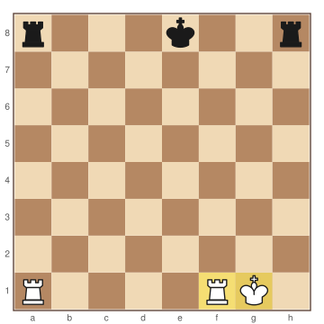
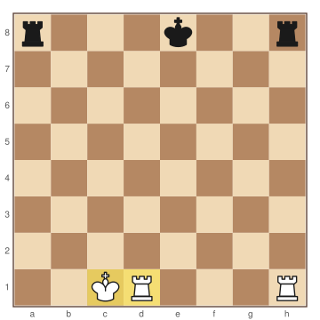
キャスリングができるのは、次の条件をすべて満たすときだけです。
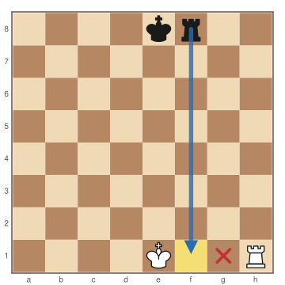
条件 2〜4 は、図 1.13 のように写真を見ればわかります。問題は条件 1 です。
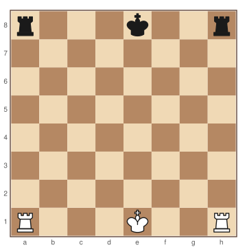
図 1.14 では、キングもルークも最初の位置にいます。でも、白のキングが一度 f1 に動いてから e1 に戻ってきたのかもしれません。そうだとしたら、もうキャスリングはできません。キャスリングする権利は、キングかルークが一度でも動いた時点で失われ、二度と戻らないのです。
そこでプログラムは、白と黒それぞれについて「ショートキャスリングの権利が残っているか」「ロングキャスリングの権利が残っているか」の 4 つを覚えておきます。これをキャスリング権と呼びます。
50 手のあいだ、どちらも駒を取らず、ポーンも動かさなかったら、引き分けにできます。ここでの「50 手」は白と黒それぞれ 50 手ずつ、合わせて 100 回の着手のことです。
写真には、最後に駒を取ったりポーンを動かしたりしてから何手たったかは写っていません。だからプログラムは、その手数を数えるカウンタを持っておきます。駒を取るかポーンを動かしたら 0 に戻し、それ以外の手なら 1 増やします。
同じ局面が 3 回現れたら、引き分けにできます。ここでいう「同じ局面」とは、駒の配置だけでなく、手番、キャスリング権、アンパッサンできるかどうかまで全部同じ、という意味です。
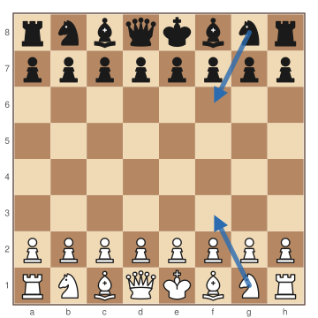
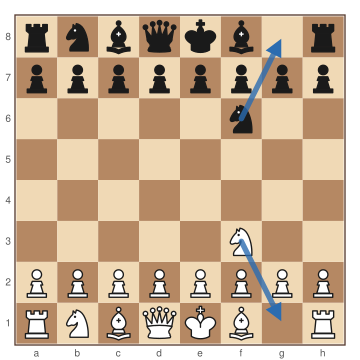
パーペチュアルチェックは、チェックをかけ続けて相手が逃げ続けるうちに、同じ局面が繰り返し現れる状態です。だからこのルールで引き分けになります。
このルールを判定するには、これまでに現れた局面をすべて覚えておく必要があります。ほかの 3 つのルールは数個の値を覚えておけば足りましたが、これだけは対局の履歴がまるごと必要です。
| ルール | 写真のほかに覚えておくもの |
|---|---|
| アンパッサン | アンパッサンで移動できるマス（なければ「なし」） |
| キャスリング | 白・黒それぞれのショート／ロングの権利（4 つ） |
| 50 手ルール | 最後に駒を取るかポーンを動かしてからの手数 |
| 3 回同一局面 | これまでに現れた局面の履歴 |
実はこの表の上の 3 つは、第 3 章で出てくる FEN という局面の書き方に、ちゃんと欄が用意されています。初期局面を FEN で書くと次のようになります。
rnbqkbnr/pppppppp/8/8/8/8/PPPPPPPP/RNBQKBNR w KQkq - 0 1
後ろのほうの KQkq がキャスリング権、- がアンパッサンのマス、0 が 50 手ルール用のカウンタです。でも、4 つ目の履歴は FEN には入りません。これは第 8 章で、局面を 1 つの数値にまとめる「ハッシュ」という技を使って扱います。
ポーンがいちばん奥の段（白なら 8 段目、黒なら 1 段目）までたどり着くと、クイーン・ルーク・ビショップ・ナイトのどれかに成ります。これをプロモーション（昇格）と呼びます。キングとポーンには成れません。すでにクイーンが盤上にいても、2 つ目のクイーンに成ることができます。
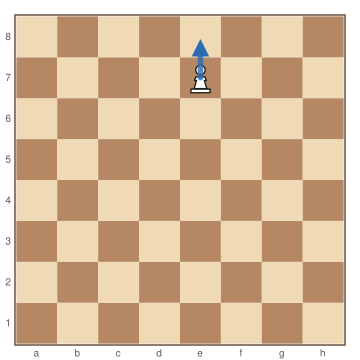
問題です。「e7 のポーンが e8 に進んでクイーンに成る」手と、「e7 のポーンが e8 に進んでナイトに成る」手。エンジンの中では同じ手ですか、違う手ですか？ それと、クイーン以外に成る意味はあると思いますか？ 実戦でナイトに成ったことはありますか？
違う手だと思います。
実践では、じゅうぶん勝勢のときに、ステイルメイトになるのが怖くてルークになったことはありますが、ナイトになったことはありません。
正解です。どちらも「e7 から e8 へ」ですが、結果の局面がまったく違うので、エンジンにとっては別の手です。そしてルークに成った経験は、まさにクイーン以外に成る意味そのものですね。図で確かめてみましょう。
ステイルメイトとは、手番の側のキングがチェックされていないのに、動かせる手が 1 つもない状態のことです。この場合、ゲームは引き分けになります。勝っている側にとっては、勝ちを逃してしまう落とし穴です。
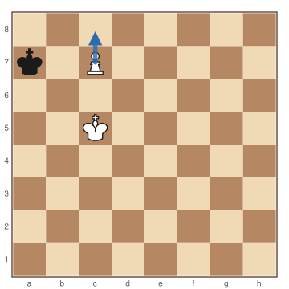
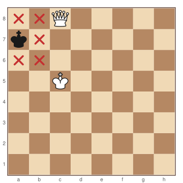
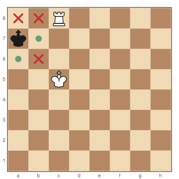
クイーンはルークの動きとビショップの動きを両方持っているので、強すぎて相手の逃げ道を全部ふさいでしまうことがあります。ルークならビショップの動き（斜め）がないぶん、b7 と a6 に逃げ道が残ります。
ナイトに成る意味があるのは、ナイトにしかできない動きがあるときです。クイーンはルークとビショップの動きを全部持っていますが、ナイトの動きだけは持っていません。
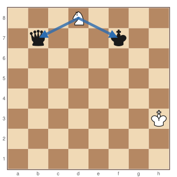
クイーン以外に成ることをアンダープロモーションと呼びます。めったに出てきませんが、エンジンにとっては「めったに出ない」は「考えなくていい」という意味ではありません。ルール上指せる手は、すべて候補に入れる必要があります。
ここまでをまとめると、エンジンが 1 つの手を表すには、次の情報が必要です。
つまり、e7 のポーンが e8 に進む手は 1 つではなく、4 つの別々の手です。エンジン同士の通信で使う書き方（UCI 形式、第 14 章）でも、e7e8q、e7e8r、e7e8b、e7e8n のように、最後に成る駒の頭文字を付けて区別します。
さらに、プロモーションは駒取りと同時に起きることもあります。たとえば e7 のポーンが d8 の駒を取りながら成る手です。「駒を取る」「ポーンを動かす」「駒が変わる」が一度に起きるので、ここもアンパッサンと並ぶバグの温床です。第 9 章では、こうした手を正しく数えられているかどうかを確かめる方法を学びます。
相手のキングを攻撃している状態をチェックと呼びます。チェックされた側は、次の手で必ずチェックを解消しなければいけません。自分のキングがチェックされたままになる手や、自分からキングを攻撃される場所に動かす手は、指すことができません。
チェックを解消する方法がどこにもない状態がチェックメイトで、チェックメイトされた側の負けです。
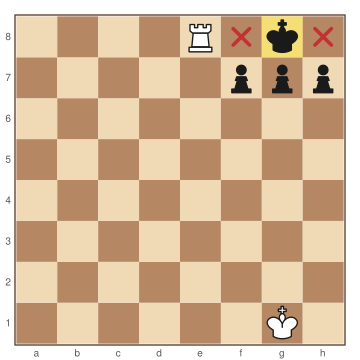
さっき、ステイルメイトという言葉が出てきましたね。チェックメイトもステイルメイトも「指せる手がない」状態です。プログラムはこの 2 つをどうやって見分ければいいでしょう？
動ける場所が0で、かつチェックされているなら、チェックメイト。そうでないならステイルメイトです。
考え方は合っています！ ただ、プログラムにするときに気をつけたいことが 2 つあります。1 つ目は「動ける場所」がキングの逃げ場所だけではない、ということ。2 つ目は「そうでないなら」の中身です。図で確かめましょう。
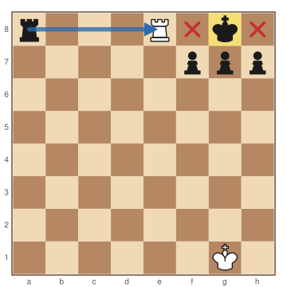
チェックを解消する方法は、キングが逃げることだけではありません。チェックしている駒を取る、あいだに駒を置いてさえぎる、という方法もあります。だから数えるべきなのは、キングの逃げ場所ではなく、自分のすべての駒について、ルール上指せる手の数です。この「ルール上指せる手」を合法手と呼びます。
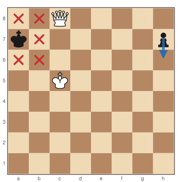
ステイルメイトも同じです。図 1.22 では黒のキングはどこにも動けませんが、h7 のポーンが動けるので、ゲームは続きます。
「チェックされていて合法手が 0 ならチェックメイト、そうでないならステイルメイト」と書くと、合法手が残っている普通の局面までステイルメイトになってしまいます。条件は 2 つあるので、組み合わせは 4 通りです。
| チェックされている | チェックされていない | |
|---|---|---|
| 合法手が 0 | チェックメイト（負け） | ステイルメイト（引き分け） |
| 合法手が 1 つ以上 | ゲーム続行 | ゲーム続行 |
Ruby で書くと、たとえばこうなります。
if legal_moves.empty? in_check? ? :checkmate : :stalemate else :ongoing end
この 5 行を動かすには、legal_moves（合法手の一覧）と in_check?（チェックされているか）が必要です。この 2 つを作るのが、第 7 章までの大きな目標になります。
ここまでに出てきたステイルメイト、50 手ルール、3 回同一局面のほかに、次の場合も引き分けになります。
合意による引き分けは人間同士の話なので、エンジンが判定する必要はありません。
代数式記譜法（SAN）と、エンジンが使う UCI 形式の違い。